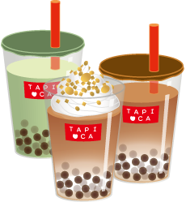

新商品の紹介や、松戸店の日常を綴っていきます。テキストテキストテキストテキスト...

Concept
TapiOkaについて
※こちらは架空のサイトです。
松戸駅から徒歩2分のところにあるタピオカドリンクのお店です。定番のタピオカミルクティーやフルーツをふんだんに使用したソーダ類も充実しています。テイクアウトはもちろんイートインスペースもあり、気軽に立ち寄れるお店です。
店舗案内
千葉県松戸市松戸XXXX-XX-XXX
- JR常磐線・新京成電鉄線「松戸駅」東口より徒歩2分
営業時間 全日 11:00〜22:00